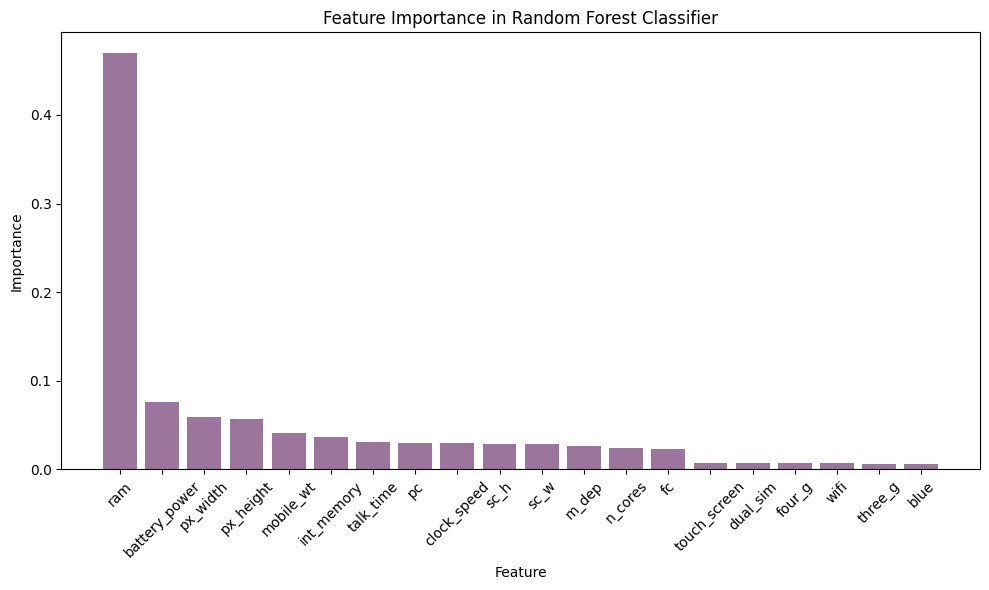
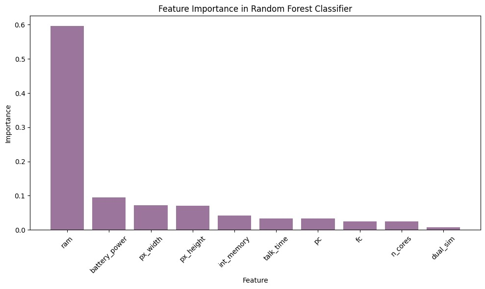
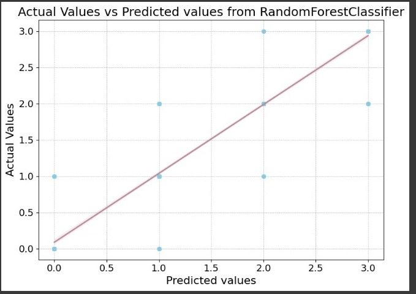

Our first model selection
Objectives for estimation.
This model aims to predict to which price range a mobile belongs (0 low cost, 1 medium cost, 2 high cost and 3 very high cost) where the response variable in the context of the data is prize_rank, so the model to be trained will be a classification model because it is a categorical variable. For the selection of the input variables, initially all the variables of the dataset were analyzed and the following graph shows their relevance in the classification model.
Now, different combinations between variables were made (always in the context of the data and the problem) and the scores of the tested model were analyzed, where the variables:
battery power,dual sim,fc,int memory,ncores,pc,pxheight,pxwidth,ram,talktime. Where the score obtained is 0.905; in this case there would be 10 input variables that when analyzing the importance in the model we obtain the following So there are variables with little importance in the model, so we tried to eliminate some of these variables in order to simplify the number of model inputs and maintain a considerably high score. Therefore, the eliminated variable is dual_sim obtaining a score of 0.901 which, although it is lower than the previous one obtained, the difference is compensated with the elimination of an input variable. In conclusion for this problem we will implement a classification model using machine learning that will predict a price range for a mobile from the specifications of its components, which are: the Gb of Ram memory, the mha of battery, the number of pixels in width and length of the screen, the internal memory, the hours of battery life, the megapixels of the main and secondary camera and the number of processor cores.
Details about your initial model selection.
Considering that the variable to be estimated will be the price range, this variable is categorical. A Random
Forest Classifier type classification model was chosen.
Before explaining the model, it is necessary to remember the concept of decision tree, a decision tree is
structured as a tree where each internal node represents a question about a specific characteristic of the data
set, each branch is an answer to the question and each leaf node is the label of the class where the observation
was classified. However, one of the disadvantages of using a decision tree model is the under-fitting and
over-fitting that make the model less accurate.
To solve this problem, the RandomForestClassifier model is based on the ensemble learning
technique known as
Random Forests, which combines multiple decision trees and makes a prediction by averaging the predictions of
each tree that composes it, this generally makes its accuracy higher compared to using only one decision tree,
avoiding failures in the tree settings.
This model was chosen because when investigating what kind of models we could select, this one seemed
interesting and more robust compared to other types of classification models. To define the model we used 90
decision trees, since by doing several tests and changing the number of trees, it gave us a score as close to 1,
it guarantees us more accuracy.
Information on validation methods and the metrics employed.
For our machine learning model, we are using the holdout validation method, where we split our dataset into a training set (70%) and a test set (30%). The metric employed to evaluate the performance of our RandomForestClassifier model is accuracy. We obtained a score of 0.9083333333333333, indicating that our model has correctly predicted 90.83% of the samples in the test set.
Preliminary conclusions drawn from your analysis to date.
In summary, our initial analysis shows promise in developing an effective classification model to predict mobile phone price ranges based on their specifications. We identified key variables such as battery power, camera resolution, and RAM, crucial for predictive accuracy. By implementing a Random Forest Classifier with 90 decision trees, we achieved a preliminary accuracy of 90.83% on the test set. These findings suggest our machine learning approach holds potential for accurately classifying mobile phone prices. However, further validation is needed to confirm the model's reliability.